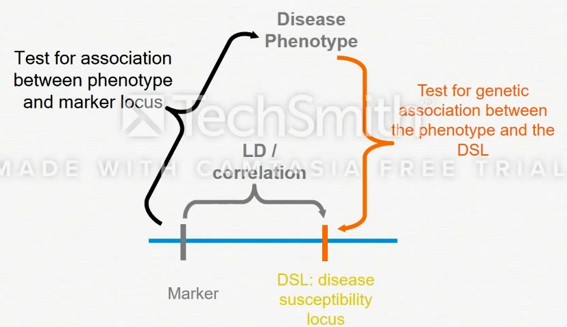

2.5 Single Variant Analysis1
- Association anaysis look for relationship between a marker and disease between families
- Association analysis: LD를 이용하여 모든 유전자를 모르더라도 분석을 해볼 수 있음 (indirect)
- GWAS(전장유전체분석)는 샘플을 많이 필요로 함

2.5.1 Tag SNP
- Marker selection: Empirical studies suggest that much of the genome can be characterized as blocks of strong LD with low haplotype diversity between blocks
- Haplotype Tagging SNPs (htSNPs)
- Typing all SNPs in regions of high LD would be redundant
- A reduced set of SNPs (htSNPs) can sufficiently represent much of common haplotype diversity in that region and reduce genotyping costs
- Methods for identification of htSNPs
- Regions of high LD are defined into blocks
- Tagging SNPs are selected within each block
- Identifying makers that represent the entire region in question
2.5.2 LD Block (Haploview)
- 일부만 genotyping 해서도 분석이 가능하기 때문에 비용을 줄여줄 수 있음
- 일부의 genotyping 자료에서 reference 자료를 활용하여 imputation 알고리즘을 통해 복원 가능하고 분석 가능함
- 따라서 chip 데이터는 전체 데이터를 genotyping 하는 것이 아니고 일부만 genotyping을 함
- 인종이 몇 세대를 거침에 따라서 crossover 과정이 발생하여 LD block의 size가 줄어들 수 있음
- 따라서 해당하는 나라와 인종에 맞는 디자인이 있어야만 정확하게 전체 유전자를 커버하는 칩을 제작할 수 있음 - (Korean Chip, 비용이 대략 11만원 정도)
- Tag SNP 디자인 하기 위해 사용하는 reference 데이터 사이트
- 두 데이터에 한국인 데이터는 없음
2.5.3 Association analysis
- Detect association between genetic variants and disease across families: exploit linkage disequilibrium
- Studies with unrelated individuals
- Case-control, Cohort designs3
- Family-based studies
- Parents-affected child trios (TDT)
- Appropriate for complex diseases
- Allele/genotype frequencies
2.5.4 Genetic Association studies
- Candidate gene (locus) testing (direct method)
- LD mapping (indirect method)
- Exploitation of relationship between LD and genetic distance
- Testing for LD between markers and disease allele
- Search for disease gene across the entire human genome
- Association scan uses ~1M markers
2.5.5 Genome-wide association study (GWAS)
- plink는 좋은 툴이나 고급분석을 하는 것에는 한계가 있어서 data management에만 이용 -> 나온 결괴를 R을 이용해서 분석함
- plink는 allele이 2개인 경우에만 분석 가능
- 데이터 용량이 매우 큼, 따라서 binary file을 이용해서 분석하는 경우가 훨씬 많음
2.5.6 Quality Control
- Hardy-Weinberg Equilibrium (HWE)
- Both allele and genotype frequencies in a population remain constant (that is, they are in equilibrium) from generation to generation unless specific disturbing influences are introduced
- Assumptions for HWE
- Large population
- Random mating
- No migration
- No mutation
- No selection
- For genetic association studies:
- Used as QC measure to assess the accuracy of the genotyping method
- Expect SNPs to be in HWE among control populations (ethnic-specific)
- Violations of HWE could indicate genotyping errors or bias in data
- Missingness
- Individual filtering
- Cryptic relatedness
- Sex inconsistency
우리나라의 경우 안성/안산 코호트 데이터를 활용해서 병원데이터와 함께 사용하기도함↩︎